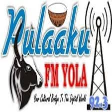

الحفاظ على تراث وقيم شعب الفولاني
راديو بولاكو FM 95.3 يولا محطة فريدة مكرسة للحفاظ على الثقافة الغنية والتاريخ واللغة لشعب الفولاني. "بولاكو" هو قانون السلوك والأخلاق القديم الذي يحدد هوية الفولاني، ويشمل فضائل مثل الصبر والانضباط والاحترام. تعمل محطتنا كمخزن ثقافي ومنصة حديثة للاحتفال بهذا التراث العميق، وربط المجتمعات الفولانية في أداماوا وما بعدها.
مهمتنا تقديم برامج ذات جودة عالية وذات صدى ثقافي بشكل أساسي باللغة الفلفلدي، مع البث أيضاً بلغات محلية أخرى لتعزيز التفاهم بين الأعراق. نهدف إلى تعليم جيل جديد أهمية جذورهم، من الموسيقى التقليدية والشعر إلى الممارسات التاريخية في تربية الماشية والزراعة.
مزيج من المحتوى التقليدي والمعلومات الحديثة، مقدم كله من منظور ثقافي.
Pulaaku FM primarily serves the Fulani communities in Adamawa State and neighboring regions. We are a crucial source of information for both settled and nomadic populations, offering relevant news and educational content. We also serve as a bridge, helping other communities appreciate the depth of Fulani culture and promoting peaceful coexistence through cultural exchange programs and broadcasts in other local languages. We believe that understanding our past is key to building a harmonious future.
العنوان: بيت بولاكو، قرب قصر اللاميدو، يولا، ولاية أداماوا، نيجيريا
الهاتف: +234 800 953 953
البريد الإلكتروني: info@pulaakufm.com